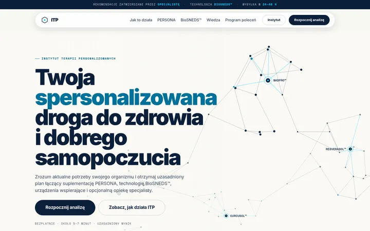
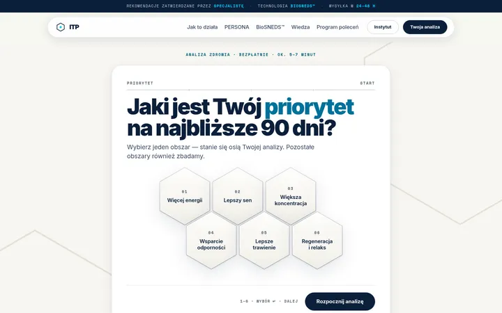
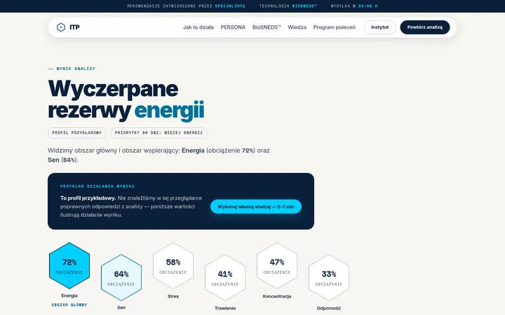
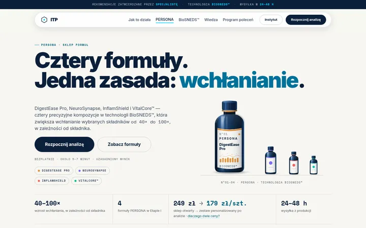
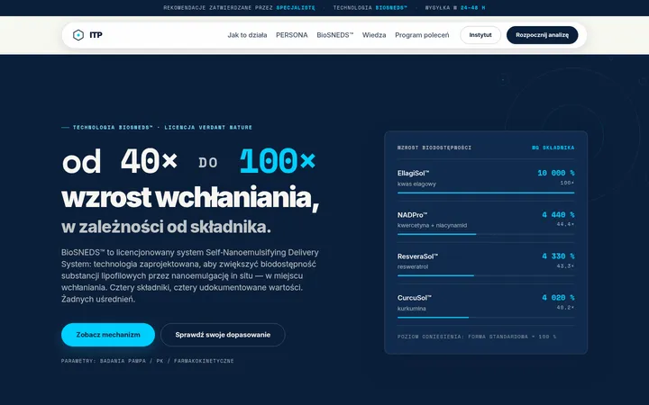
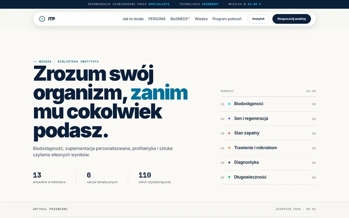
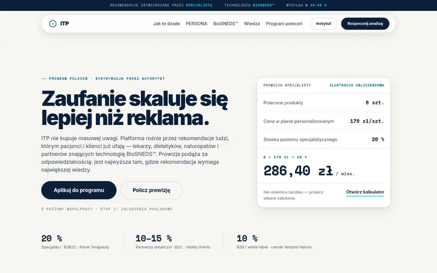

Instytut Terapii Personalizowanych · Etap I
Siedem makiet, jeden system wizualny.
Statyczny podgląd roboczy. Nawigacja, analiza, koszyk i formularze działają; dane są przykładowe, żadne zamówienie nie zostaje złożone i żadna wiadomość nie zostaje wysłana.
40–100×
wzrost wchłaniania, w zależności od składnika
4
formuły PERSONA w Etapie I
249 → 179 zł
sklep otwarty → zestaw personalizowany
12
pytań analizy · 5–7 minut

01 Strona główna
02 Analiza zdrowia
03 Wynik analizy
04 Formuły PERSONA
05 BioSNEDS™
06 Wiedza
07 Program poleceńPlatforma ma charakter edukacyjny i rekomendacyjny i nie zastępuje konsultacji lekarskiej.
Treści, nazwiska ekspertów i certyfikaty na makietach są materiałem zastępczym do zatwierdzenia. Wartości biodostępności pochodzą z parametrów laboratoryjnych projektu: EllagiSol™ 10 000 % (100×), NADPro™ 4 440 %, ResveraSol™ 4 330 %, CurcuSol™ 4 020 %.